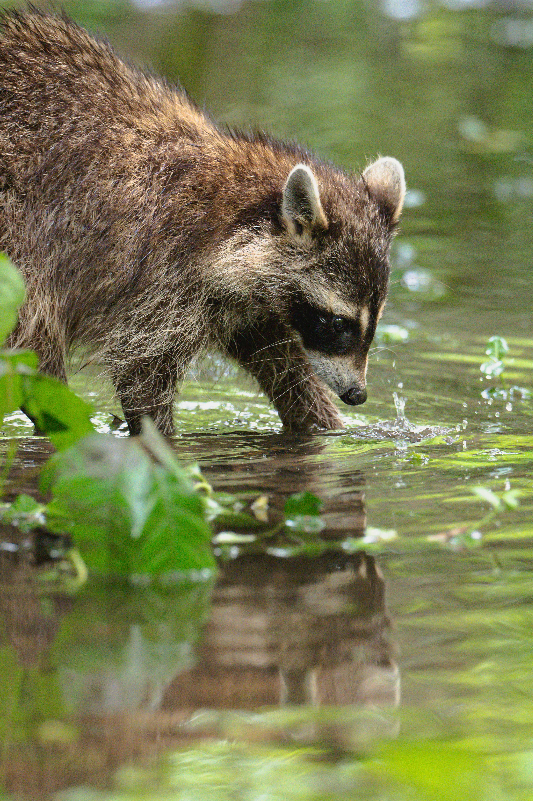

يظهر فيها الأيل الأحمر الكبير بقرونه الضخمة والمتشعبة وهو يطلق صيحة قوية (سلوك الزمجرة) في بيئته الطبيعية قرب الماء
الأيل الأحمر أو الوعل (Red Deer / Elk)

هذا السرب من الطيور البيضاء هو إوز الثلج، وهو طائر مائي مهاجر يتميز بريشه الأبيض الناصع مع أطراف سوداء على الجناحين (تظهر عند الطيران)، ومنقار وردي مميز.
(Snow Goose اوز الثلج)

هذا الطائر هو أنثى الكاردينال الشمالي. على عكس الذكور التي تتميز بلونها الأحمر الفاقع، تكتسي الإناث باللون البني المائل للرمادي مع لمسات حمراء خفيفة على الجناحين والعُرف، ويمتلك منقاراً برتقالياً مخروطياً قوياً.
طائر الكاردينال الشمالي - الأنثى (Female Northern Cardinal)

هذا القط البري المفترس هو الوشق الأوراسي، وتستطيع تمييزه فوراً من الخصلات السوداء الطويلة الممتدة من أطراف أذنيه، وفروه المنقط الجميل.
الوشق الأوراسي (Eurasian Lynx)

هذا الطائر الجميل هو سمان كاليفورنيا
ويُعرف أيضاً باسم سمان الوادي
(California Quail)

يظهر فيها النمس المخطط، وهو حيوان ثديي صغير يتميز بجسمه الطويل المرن والخطوط الداكنة التي تغطي ظهره، ويشتهر بذكائه وسرعته الشديدة في صيد الفرائس.
حيوان النمس المخطط (Banded Mongoose)

هذه الحيوانات هي الأيائل بيضاء الذيل. الصورة الثانية تظهر ذكراً شاباً تبدأ قرونه الصغيرة بالنمو مغطاة بطبقة مخملية، بينما تظهر الصورة الرابعة رأسه بوضوح من زاوية جانبية.
غزال أبيض الذيل (White-tailed Deer)

هذا هو حيوان الراكون الشهير بـ "قناعه" الأسود المميز حول عينيه وذيله المخطط. الصورة الثالثة تلتقط ملامح وجهه اللطيفة وسط الأعشاب، والصورة الخامسة توثق سلوكه المعتاد في غسل طعامه أو تفقد المياه.
حيوان الراكون (Raccoon)